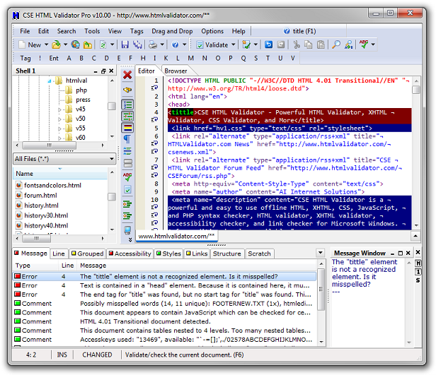

From http://www.w3schools.com (Copyright Refsnes Data)
Web Page Validation
Web Page Validator
A validator is a software program that can check your web pages against the
web standards.
When using a validator to check HTML, XHTML or CSS documents, the validator
returns a list of errors found, according to your chosen standard.
Make sure you make it a habit to validate all your web pages before
publishing.
Validate your HTML files with W3C
Validate your CSS files with W3C
Validate your XHTML files with W3C
An XHTML document is validated against a Document Type Definition (DTD).
You can read more about XHTML validation in our
HTML tutorial.
Validate your XML files with Internet Explorer
Validate your WML files with Internet Explorer
Fast, Powerful, Customizable, and Offline HTML,
CSS, Accessibility, SEO, and Link Checking.
- Super-fast offline HTML, CSS, link, and more checking
- Built-in editor lets you easily find and fix problem
- Search engine checking (SEO) to help improve rankings
- Checks for issues that other validators don't
- Accessibility checking, including WCAG 2.0
- Check everything with just one click or keypress
- Customize the message output to your needs
- Check an entire site with the Batch Wizard
- Easily check the output of dynamic pages
- Prices start at just $69, and a free trial is available

From http://www.w3schools.com (Copyright Refsnes Data)